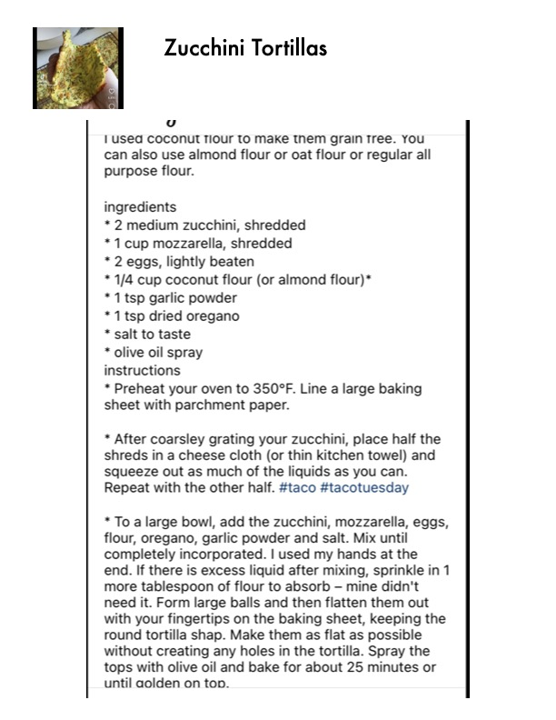

Zucchini Tortillas

Original cookbook page 288
Ingredients
- * 2 medium zucchini, shredded
- *1 cup mozzarella, shredded
- * 2 eggs, lightly beaten
- * 1/4 cup coconut flour (or almond flour) *
- *1tsp garlic powder
- *1 tsp dried oregano
- * salt to taste
- * olive oil spray
Instructions
- * Preheat your oven to 350°F.
- Line a large baking sheet with parchment paper.
- * After coarsley grating your zucchini, place half the shreds in a cheese cloth (or thin kitchen towel) and squeeze out as much of the liquids as you can.
- * To a large bowl, add the zucchini, mozzarella, eggs, flour, oregano, garlic powder and salt.
- Mix until completely incorporated.
- If there is excess liquid after mixing, sprinkle in 1 more tablespoon of flour to absorb — mine didn't need it.
- Form large balls and then flatten them out with your fingertips on the baking sheet, keeping the round tortilla shap.
- Spray the tops with olive oil and bake for about 25 minutes or until aolden on top.
Recipe #288 from collection